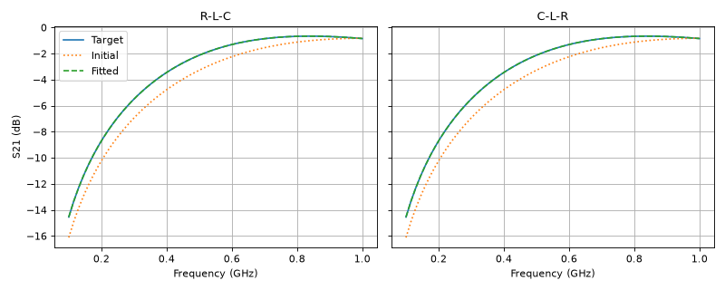

Fitting Multiple Models from One Parameter Set
Although pmrf.Module.at() and pmrf.Module.tied() provide a convenient way to manipulate models and tie parameters together, it is sometimes more convenient to have a single parameter base from which all models are derived. In this example, we fit two arrangements of the same resistor, inductor, and capacitor. Rather than fitting either circuit directly, we fit one set of R, L, and C values and use them to create both circuits.
Using a Dictionary of Parameters
All optimization and fitting routines accept a JAX “PyTree”. Ultimately, this is a collection of parameters, and includes both pmrf.Model and pmrf.Module classes, as well as common Python data structures. In this example, we use a dictionary of parameters as a base and create two circuit arrangements which we then fit.
import jax.numpy as jnp
import matplotlib.pyplot as plt
import pmrf as prf
from pmrf.models import Capacitor, Inductor, Resistor
def models(params):
resistor = Resistor(params["R"])
inductor = Inductor(params["L"])
capacitor = Capacitor(params["C"])
return (
resistor ** inductor ** capacitor,
capacitor ** inductor ** resistor,
)
def predictor(params, frequency):
responses = tuple(
model.s(frequency)[:, 1, 0]
for model in models(params)
)
# The optimizer sees one real-valued array containing both complex traces.
return jnp.stack([
jnp.concatenate((response.real, response.imag))
for response in responses
])
frequency = prf.Frequency(0.1, 1.0, 61, "GHz")
truth = {
"R": 8.0,
"L": 12e-9,
"C": 3e-12,
}
initial = {
"R": prf.Bounded(1.0, 20.0, value=10.0),
"L": prf.Bounded(5.0, 20.0, value=10.0, scale=1e-9),
"C": prf.Bounded(1.0, 6.0, value=2.5, scale=1e-12),
}
target = predictor(truth, frequency)
result = prf.fitting.fit_minimize(
initial,
target,
frequency=frequency,
features=predictor,
max_iter=200,
)
Using a ParamRF Module
For simple examples, dictionaries are adequate. However, if the same set of parameters is used in several places, it can be useful to define a pmrf.Module instead. This gives the parameters named fields and access to helpers such as pmrf.Module.at() and pmrf.Module.named_params(). This approach is demonstrated below.
class RLCParameters(prf.Module):
R: prf.Param
L: prf.Param
C: prf.Param
def module_predictor(params, frequency):
return predictor(
{"R": params.R, "L": params.L, "C": params.C},
frequency,
)
initial_module = RLCParameters(**initial)
module_result = prf.fitting.fit_minimize(
initial_module,
target,
frequency=frequency,
features=module_predictor,
max_iter=200,
)
Plotting the Derived Models
Finally, we compare the initial and fitted responses for both arrangements. We pass the fitted dictionary back to models, which creates both circuits using the fitted R, L, and C values.
def s21_db(model):
return 20 * jnp.log10(jnp.abs(model.s(frequency)[:, 1, 0]))
fig, axes = plt.subplots(1, 2, figsize=(10, 4), sharey=True)
titles = ("R-L-C", "C-L-R")
for axis, title, truth_model, initial_model, fitted_model in zip(
axes,
titles,
models(truth),
models(initial),
models(result.model),
):
axis.plot(frequency.f_scaled, s21_db(truth_model), label="Target")
axis.plot(
frequency.f_scaled,
s21_db(initial_model),
":",
label="Initial",
)
axis.plot(
frequency.f_scaled,
s21_db(fitted_model),
"--",
label="Fitted",
)
axis.set_title(title)
axis.set_xlabel(f"Frequency ({frequency.unit})")
axis.grid(True)
axes[0].set_ylabel("S21 (dB)")
axes[0].legend()
fig.tight_layout()

This approach is also useful for measurements made with different fixtures or reference planes: fit the common parameters once, then construct the appropriate RF model for each measurement.